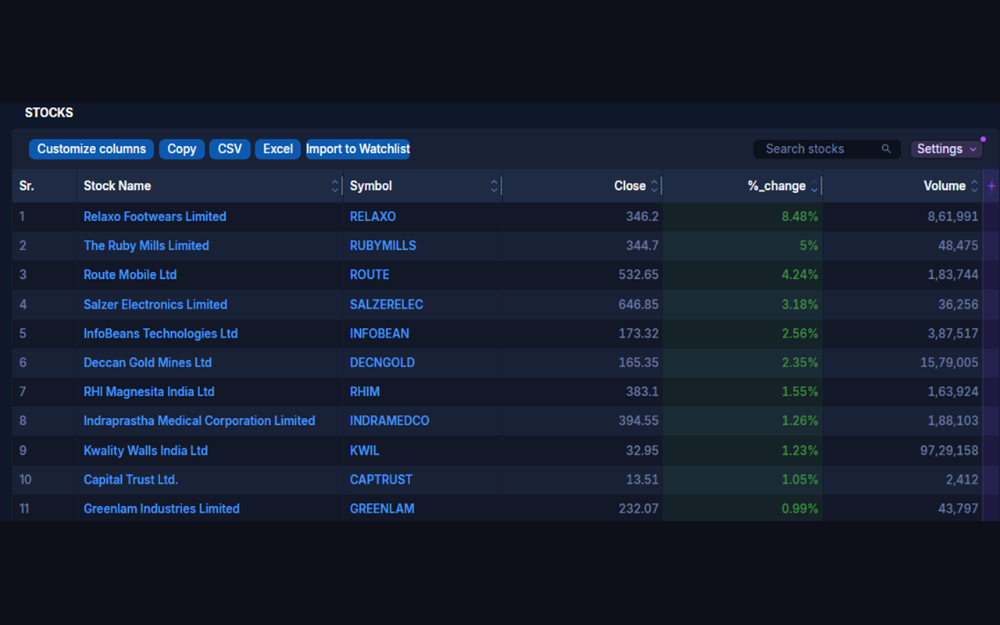
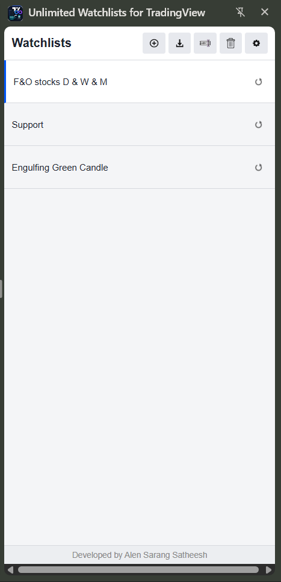
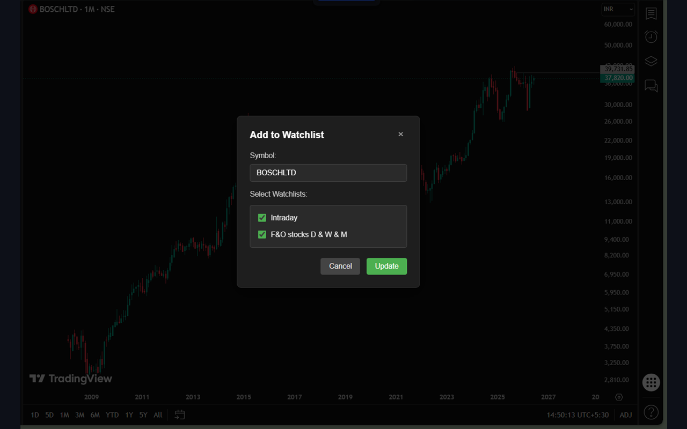

Unlimited watchlists for TradingView
A free Chrome extension that keeps all your watchlists in the browser side panel — no TradingView watchlist limit. Import stocks from Chartink screeners or CSV files, and open any chart with one click.
Add to Chrome — FreeNo account. No tracking. Works with TradingView's free plan.
- Unlimited watchlists
- Chartink import
- CSV import & export
- Data stays local

Everything a watchlist should do
TradingView's free plan caps your watchlists — this side panel doesn't. Build as many as your strategy needs.
Unlimited watchlists
Create, rename, reorder and delete as many watchlists as you need — right in the browser side panel.
One-click charts
Click any symbol to open or switch its chart on TradingView. Press Space to cycle through the list.
Chartink screener import
Pull every stock from a Chartink screener into a watchlist named after that screener — one button on the screener page.
One-click re-sync
Imported screeners remember their Chartink URL. Re-sync anytime to refresh the list with today's results.
CSV import & export
Bulk-add symbols from a CSV file, or export a watchlist to move it to another machine.
Search, sort & drag
Filter symbols as you type, sort A–Z, and reorder watchlists or stocks with drag-and-drop.
Add from TradingView
A floating "Add to Watchlist" button on TradingView pages saves the current symbol to any of your lists.
Dark & light themes
Match your TradingView setup. Your choice is remembered.
Private by design
Your watchlists never leave your device. No accounts, no analytics, no ads.

Import Chartink screeners into TradingView watchlists
Stop copying symbols by hand. The extension adds an Import to Watchlist button to every screener page on chartink.com:
- Run your scan on Chartink as usual.
- Click Import to Watchlist. Every stock in the results — including all pages — is saved into a watchlist named after the screener.
- Re-sync whenever you like. The watchlist remembers its screener URL, so one click pulls in today's fresh results.
Up and running in under a minute
Install the extension
Open it from Chrome's side panel — it sits beside any tab you're on.
Create a watchlist
Make one per strategy, sector, or timeframe — there's no cap.
Add your symbols
From a Chartink screener, a CSV file, or the Add button on any TradingView page.
Fly through charts
Click a symbol to open its chart. Press Space to jump to the next one.
Take a look around
Light or dark — the panel stays out of your way and next to your charts.




Frequently asked questions
Is the extension free?
Yes — completely free, with no premium tier, no ads, and no account required.
How do I get more watchlists on TradingView's free plan?
TradingView's free plan limits how many watchlists you can create. This extension keeps its own watchlists in a Chrome side panel, so you can create as many as you want and still open every chart on TradingView with one click — on any TradingView plan, including the free one.
How does the Chartink import work?
Open any screener on chartink.com and click the Import to Watchlist button the extension adds to the page. All result symbols are saved into a watchlist named after the screener. The list keeps the screener's URL, so you can re-sync it with one click whenever the scan results change.
Where is my data stored? Do watchlists sync between devices?
Everything is stored locally in your browser using Chrome's storage.local
API. Nothing is uploaded anywhere, which also means watchlists don't sync between
devices. You can export a list to CSV and import it on another machine.
What data does the extension collect?
None. No analytics, no tracking, no accounts. The only network requests it makes are to chartink.com (when you import or re-sync a screener) and tradingview.com (when you open a chart). Read the full Privacy Policy.
Is this affiliated with TradingView or Chartink?
No. This is an independent tool built by an individual developer. It is not affiliated with, endorsed by, or sponsored by TradingView or Chartink. All trademarks belong to their respective owners.
Your watchlists, without the limits
Free, private, and one click away from your next chart.
Add to Chrome — Free